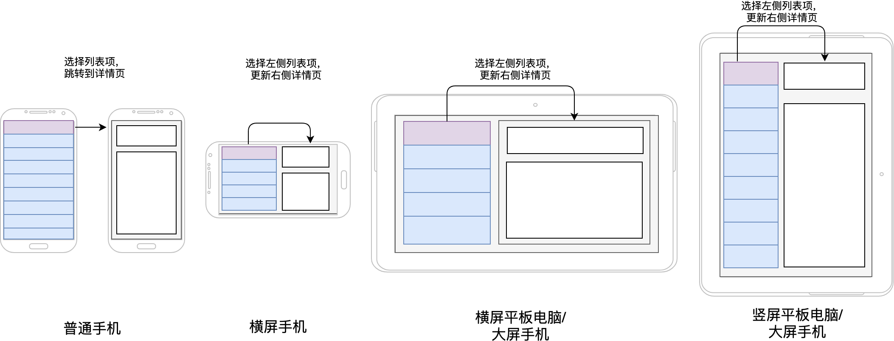
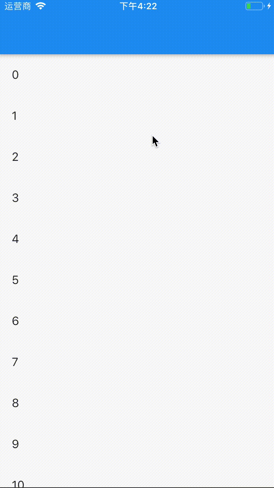
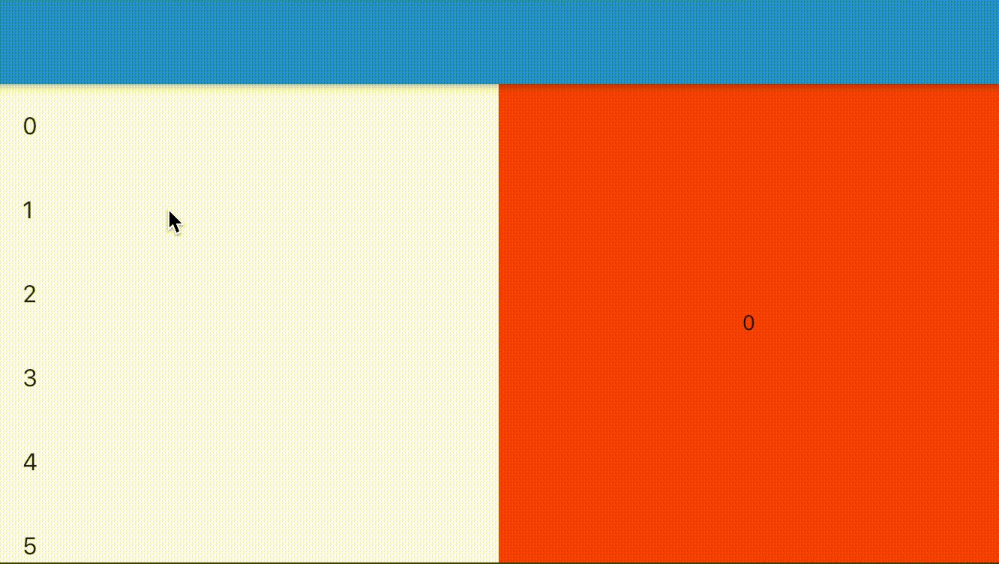
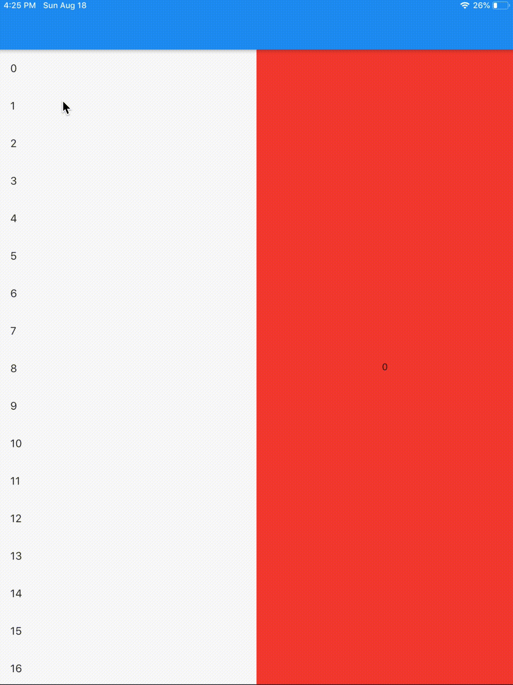
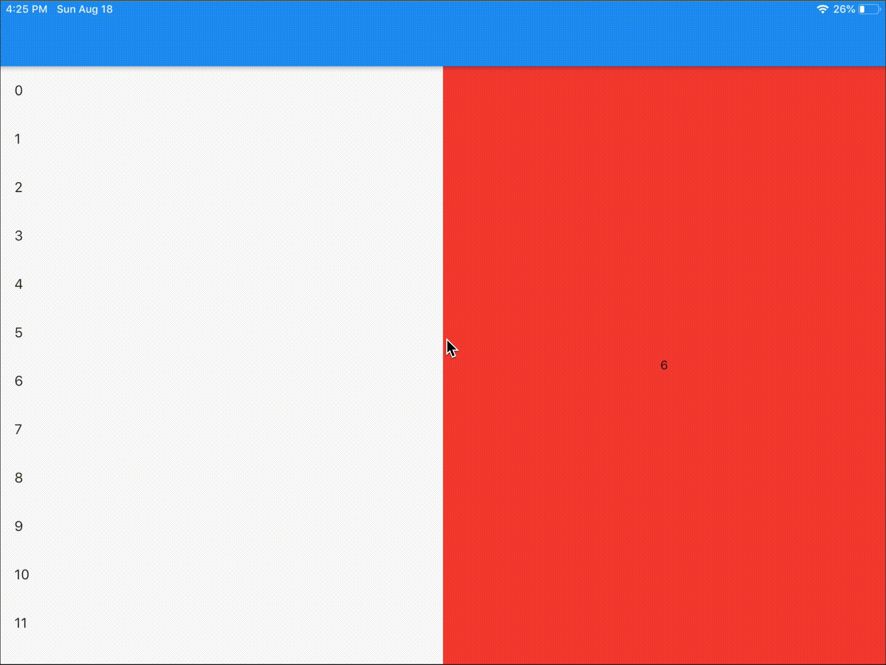

- 00 开篇词 为什么每一位大前端从业者都应该学习Flutter？.md
- 01 预习篇 · 从0开始搭建Flutter工程环境.md
- 02 预习篇 · Dart语言概览.md
- 03 深入理解跨平台方案的历史发展逻辑.md
- 04 Flutter区别于其他方案的关键技术是什么？.md
- 05 从标准模板入手，体会Flutter代码是如何运行在原生系统上的.md
- 06 基础语法与类型变量：Dart是如何表示信息的？.md
- 07 函数、类与运算符：Dart是如何处理信息的？.md
- 08 综合案例：掌握Dart核心特性.md
- 09 Widget，构建Flutter界面的基石.md
- 10 Widget中的State到底是什么？.md
- 11 提到生命周期，我们是在说什么？.md
- 12 经典控件（一）：文本、图片和按钮在Flutter中怎么用？.md
- 13 经典控件（二）：UITableView_ListView在Flutter中是什么？.md
- 14 经典布局：如何定义子控件在父容器中排版的位置？.md
- 15 组合与自绘，我该选用何种方式自定义Widget？.md
- 16 从夜间模式说起，如何定制不同风格的App主题？.md
- 17 依赖管理（一）：图片、配置和字体在Flutter中怎么用？.md
- 18 依赖管理（二）：第三方组件库在Flutter中要如何管理？.md
- 19 用户交互事件该如何响应？.md
- 20 关于跨组件传递数据，你只需要记住这三招.md
- 21 路由与导航，Flutter是这样实现页面切换的.md
- 22 如何构造炫酷的动画效果？.md
- 23 单线程模型怎么保证UI运行流畅？.md
- 24 HTTP网络编程与JSON解析.md
- 25 本地存储与数据库的使用和优化.md
- 26 如何在Dart层兼容Android_iOS平台特定实现？（一）.md
- 27 如何在Dart层兼容Android_iOS平台特定实现？（二）.md
- 28 如何在原生应用中混编Flutter工程？.md
- 29 混合开发，该用何种方案管理导航栈？.md
- 30 为什么需要做状态管理，怎么做？.md
- 31 如何实现原生推送能力？.md
- 32 适配国际化，除了多语言我们还需要注意什么_.md
- 33 如何适配不同分辨率的手机屏幕？.md
- 34 如何理解Flutter的编译模式？.md
- 35 Hot Reload是怎么做到的？.md
- 36 如何通过工具链优化开发调试效率？.md
- 37 如何检测并优化Flutter App的整体性能表现？.md
- 38 如何通过自动化测试提高交付质量？.md
- 39 线上出现问题，该如何做好异常捕获与信息采集？.md
- 40 衡量Flutter App线上质量，我们需要关注这三个指标.md
- 41 组件化和平台化，该如何组织合理稳定的Flutter工程结构？.md
- 42 如何构建高效的Flutter App打包发布环境？.md
- 43 如何构建自己的Flutter混合开发框架（一）？.md
- 44 如何构建自己的Flutter混合开发框架（二）？.md
- 特别放送 温故而知新，与你说说专栏的那些思考题.md
- 结束语 勿畏难，勿轻略.md
33 如何适配不同分辨率的手机屏幕？
你好，我是陈航。
在上一篇文章中，我与你分享了在Flutter中实现国际化的基本原理。与原生Android和iOS只需为国际化资源提供不同的目录，就可以在运行时自动根据语言和地区进行适配不同，Flutter的国际化是完全在代码中实现的。
即通过代码声明的方式，将应用中所有需要翻译的文案都声明为LocalizationsDelegate的属性，然后针对不同的语言和地区进行手动翻译适配，最后在初始化应用程序时，将这个代理设置为国际化的翻译回调。而为了简化这个过程，也为了将国际化资源与代码实现分离，我们通常会使用arb文件存储不同语言地区的映射关系，并通过Flutter i18n插件来实现代码的自动生成。
可以说，国际化为全世界的用户提供了统一而标准的体验。那么，为不同尺寸、不同旋转方向的手机提供统一而标准的体验，就是屏幕适配需要解决的问题了。
在移动应用的世界中，页面是由控件组成的。如果我们支持的设备只有普通手机，可以确保同一个页面、同一个控件，在不同的手机屏幕上的显示效果是基本一致的。但，随着平板电脑和类平板电脑等超大屏手机越来越普及，很多原本只在普通手机上运行的应用也逐渐跑在了平板上。
但，由于平板电脑的屏幕非常大，展示适配普通手机的界面和控件时，可能会出现UI异常的情况。比如，对于新闻类手机应用来说，通常会有新闻列表和新闻详情两个页面，如果我们把这两个页面原封不动地搬到平板电脑上，就会出现控件被拉伸、文字过小过密、图片清晰度不够、屏幕空间被浪费的异常体验。
而另一方面，即使对于同一台手机或平板电脑来说，屏幕的宽高配置也不是一成不变的。因为加速度传感器的存在，所以当我们旋转屏幕时，屏幕宽高配置会发生逆转，即垂直方向与水平方向的布局行为会互相交换，从而导致控件被拉伸等UI异常问题。
因此，为了让用户在不同的屏幕宽高配置下获得最佳的体验，我们不仅需要对平板进行屏幕适配，充分利用额外可用的屏幕空间，也需要在屏幕方向改变时重新排列控件。即，我们需要优化应用程序的界面布局，为用户提供新功能、展示新内容，以将拉伸变形的界面和控件替换为更自然的布局，将单一的视图合并为复合视图。
在原生Android或iOS中，这种在同一页面实现不同布局的行为，我们通常会准备多个布局文件，通过判断当前屏幕分辨率来决定应该使用哪套布局方式。在Flutter中，屏幕适配的原理也非常类似，只不过Flutter并没有布局文件的概念，我们需要准备多个布局来实现。
那么今天，我们就来分别来看一下如何通过多个布局，实现适配屏幕旋转与平板电脑。
适配屏幕旋转
在屏幕方向改变时，屏幕宽高配置也会发生逆转：从竖屏模式变成横屏模式，原来的宽变成了高（垂直方向上的布局空间更短了），而高则变成了宽（水平方向上的布局空间更长了）。
通常情况下，由于ScrollView和ListView的存在，我们基本上不需要担心垂直方向上布局空间更短的问题，大不了一屏少显示几个控件元素，用户仍然可以使用与竖屏模式同样的交互滚动视图来查看其他控件元素；但水平方向上布局空间更长，界面和控件通常已被严重拉伸，原有的布局方式和交互方式都需要做较大调整。
从横屏模式切回竖屏模式，也是这个道理。
为了适配竖屏模式与横屏模式，我们需要准备两个布局方案，一个用于纵向，一个用于横向。当设备改变方向时，Flutter会通知我们重建布局：Flutter提供的OrientationBuilder控件，可以在设备改变方向时，通过builder函数回调告知其状态。这样，我们就可以根据回调函数提供的orientation参数，来识别当前设备究竟是处于横屏（landscape）还是竖屏（portrait）状态，从而刷新界面。
如下所示的代码演示了OrientationBuilder的具体用法。我们在其builder回调函数中，准确地识别出了设备方向，并对横屏和竖屏两种模型加载了不同的布局方式，而_buildVerticalLayout和_buildHorizontalLayout是用于创建相应布局的方法：
@override
Widget build(BuildContext context) {
return Scaffold(
//使用OrientationBuilder的builder模式感知屏幕旋转
body: OrientationBuilder(
builder: (context, orientation) {
//根据屏幕旋转方向返回不同布局行为
return orientation == Orientation.portrait
? _buildVerticalLayout()
: _buildHorizontalLayout();
},
),
);
}
OrientationBuilder提供了orientation参数可以识别设备方向，而如果我们在OrientationBuilder之外，希望根据设备的旋转方向设置一些组件的初始化行为，也可以使用MediaQueryData提供的orientation方法：
if(MediaQuery.of(context).orientation == Orientation.portrait) {
//dosth
}
需要注意的是，Flutter应用默认支持竖屏和横屏两种模式。如果我们的应用程序不需要提供横屏模式，也可以直接调用SystemChrome提供的setPreferredOrientations方法告诉Flutter，这样Flutter就可以固定视图的布局方向了：
SystemChrome.setPreferredOrientations([DeviceOrientation.portraitUp]);
适配平板电脑
当适配更大的屏幕尺寸时，我们希望App上的内容可以适应屏幕上额外的可用空间。如果我们在平板中使用与手机相同的布局，就会浪费大量的可视空间。与适配屏幕旋转类似，最直接的方法是为手机和平板电脑创建两种不同的布局。然而，考虑到平板电脑和手机为用户提供的功能并无差别，因此这种实现方式将会新增许多不必要的重复代码。
为解决这个问题，我们可以采用另外一种方法：将屏幕空间划分为多个窗格，即采用与原生Android、iOS类似的Fragment、ChildViewController概念，来抽象独立区块的视觉功能。
多窗格布局可以在平板电脑和横屏模式上，实现更好的视觉平衡效果，增强App的实用性和可读性。而，我们也可以通过独立的区块，在不同尺寸的手机屏幕上快速复用视觉功能。
如下图所示，分别展示了普通手机、横屏手机与平板电脑，如何使用多窗格布局来改造新闻列表和新闻详情交互：

图1 多窗格布局示意图
首先，我们需要分别为新闻列表与新闻详情创建两个可重用的独立区块：
- 新闻列表，可以在元素被点击时通过回调函数告诉父Widget元素索引；
- 而新闻详情，则用于展示新闻列表中被点击的元素索引。
对于手机来说，由于空间小，所以新闻列表区块和新闻详情区块都是独立的页面，可以通过点击新闻元素进行新闻详情页面的切换；而对于平板电脑（和手机横屏布局）来说，由于空间足够大，所以我们把这两个区块放置在同一个页面，可以通过点击新闻元素去刷新同一页面的新闻详情。
页面的实现和区块的实现是互相独立的，通过区块复用就可以减少编写两个独立布局的工作：
//列表Widget
class ListWidget extends StatefulWidget {
final ItemSelectedCallback onItemSelected;
ListWidget(
this.onItemSelected,//列表被点击的回调函数
);
@override
_ListWidgetState createState() => _ListWidgetState();
}
class _ListWidgetState extends State<ListWidget> {
@override
Widget build(BuildContext context) {
//创建一个20项元素的列表
return ListView.builder(
itemCount: 20,
itemBuilder: (context, position) {
return ListTile(
title: Text(position.toString()),//标题为index
onTap:()=>widget.onItemSelected(position),//点击后回调函数
);
},
);
}
}
//详情Widget
class DetailWidget extends StatefulWidget {
final int data; //新闻列表被点击元素索引
DetailWidget(this.data);
@override
_DetailWidgetState createState() => _DetailWidgetState();
}
class _DetailWidgetState extends State<DetailWidget> {
@override
Widget build(BuildContext context) {
return Container(
color: Colors.red,//容器背景色
child: Center(
child: Column(
mainAxisAlignment: MainAxisAlignment.center,
children: <Widget>[
Text(widget.data.toString()),//居中展示列表被点击元素索引
],
),
),
);
}
}
然后，我们只需要检查设备屏幕是否有足够的宽度来同时展示列表与详情部分。为了获取屏幕宽度，我们可以使用MediaQueryData提供的size方法。
在这里，我们将平板电脑的判断条件设置为宽度大于480。这样，屏幕中就有足够的空间可以切换到多窗格的复合布局了：
if(MediaQuery.of(context).size.width > 480) {
//tablet
} else {
//phone
}
最后，如果宽度够大，我们就会使用Row控件将列表与详情包装在同一个页面中，用户可以点击左侧的列表刷新右侧的详情；如果宽度比较小，那我们就只展示列表，用户可以点击列表，导航到新的页面展示详情：
class _MasterDetailPageState extends State<MasterDetailPage> {
var selectedValue = 0;
@override
Widget build(BuildContext context) {
return Scaffold(
body: OrientationBuilder(builder: (context, orientation) {
//平板或横屏手机，页面内嵌列表ListWidget与详情DetailWidget
if (MediaQuery.of(context).size.width > 480) {
return Row(children: <Widget>[
Expanded(
child: ListWidget((value) {//在列表点击回调方法中刷新右侧详情页
setState(() {selectedValue = value;});
}),
),
Expanded(child: DetailWidget(selectedValue)),
]);
} else {//普通手机，页面内嵌列表ListWidget
return ListWidget((value) {//在列表点击回调方法中打开详情页DetailWidget
Navigator.push(context, MaterialPageRoute(
builder: (context) {
return Scaffold(
body: DetailWidget(value),
);
},
));
});
}
}),
);
}
}
运行一下代码，可以看到，我们的应用已经完全适配不同尺寸、不同方向的设备屏幕了。

图2 竖屏手机版列表详情

图3 横屏手机版列表详情

图4 竖屏平板列表详情

图5 横屏平板列表详情
总结
好了，今天的分享就到这里。我们总结一下今天的核心知识点吧。
在Flutter中，为了适配不同设备屏幕，我们需要提供不同的布局方式。而将独立的视觉区块进行封装，通过OrientationBuilder提供的orientation回调参数，以及MediaQueryData提供的屏幕尺寸，以多窗格布局的方式为它们提供不同的页面呈现形态，能够大大降低编写独立布局所带来的重复工作。如果你的应用不需要支持设备方向，也可以通过SystemChrome提供的setPreferredOrientations方法，强制竖屏。
做好应用开发，我们除了要保证产品功能正常，还需要兼容碎片化（包括设备碎片化、品牌碎片化、系统碎片化、屏幕碎片化等方面）可能带来的潜在问题，以确保良好的用户体验。
与其他维度碎片化可能带来功能缺失甚至Crash不同，屏幕碎片化不至于导致功能完全不可用，但控件显示尺寸却很容易在没有做好适配的情况下产生变形，让用户看到异形甚至不全的UI信息，影响产品形象，因此也需要重点关注。
在应用开发中，我们可以分别在不同屏幕尺寸的主流机型和模拟器上运行我们的程序，来观察UI样式和功能是否异常，从而写出更加健壮的布局代码。
我把今天分享所涉及到的知识点打包到了GitHub中，你可以下载下来，反复运行几次，加深理解与记忆。
思考题
最后，我给你留下一道思考题吧
setPreferredOrientations方法是全局生效的，如果你的应用程序中有两个相邻的页面，页面A仅支持竖屏，页面B同时支持竖屏和横屏，你会如何实现呢？
欢迎你在评论区给我留言分享你的观点，我会在下一篇文章中等待你！感谢你的收听，也欢迎你把这篇文章分享给更多的朋友一起阅读。
© 2019 - 2023 Liangliang Lee. Powered by gin and hexo-theme-book.